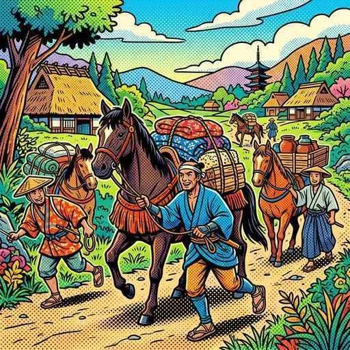
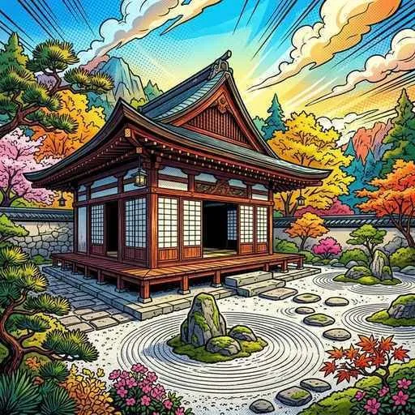
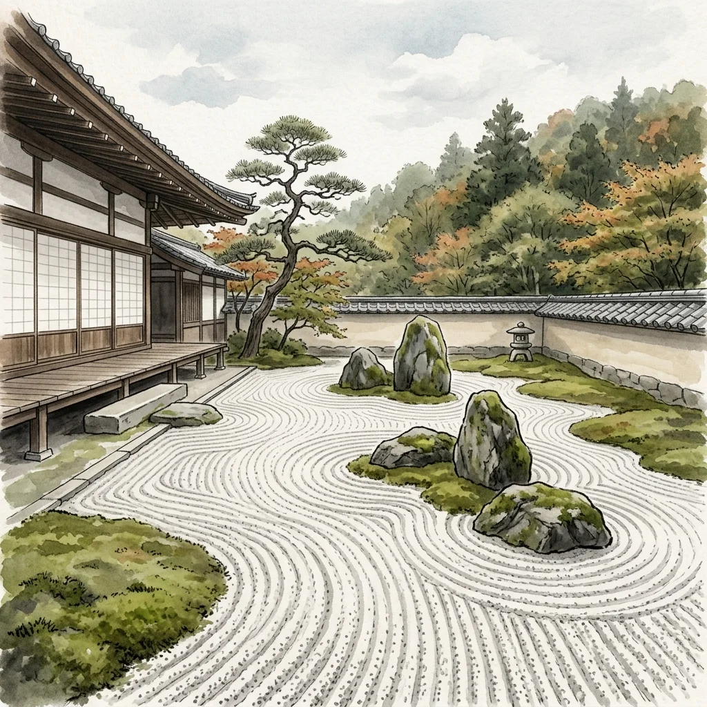

14. 民衆の成長と室町文化
戦国大名たちが激しい戦いを繰り広げていた一方、庶民や農民の暮らしの中では、農業や商業が劇的な進化を遂げていました。また、この活気ある社会を背景に、現在の「和風」の暮らしのルーツとなるユニークな文化が花開きました。今回は、室町時代の豊かな産業の発展と、対比して出題されやすい「２つの室町文化」を解説します！
1. 農業と商業の発展（経済の活性化）
室町時代には、生産技術の向上と交通網の整備により、日本全体の経済がとても活発になりました。
① 農業の進歩
鎌倉時代に一部の地域で始まった、同じ土地で年2回異なる作物を育てる二毛作（米と裏作の麦など）が全国に普及し、一部では三毛作（さんもうさく）も行われました。また、牛馬に田畑を耕させたり、草木を燃やした灰（草木灰）などの肥料を使ったりすることで、収穫量が大幅にアップしました。
② 定期市（ていきいち）の広まりと「座」の結成
物資が増えたことで、各地の交通の要所で月に数回開かれる定期市（ていきいち／三斎市や六斎市など）が盛んに行われ、明から輸入された銅銭（明銭）が日本中で大量に使われました。
また、手工業者や商人は、自分たちの商売の特権を守るための同業者組合である座（ざ）を結成しました。彼らは公家や大きなお寺・神社に税を納める代わりに、商品の独占販売権を得ました。
③ 運送業と金融業の台頭
全国から運ばれてくる物資をさばくため、水上交通では港町で倉庫・運送業を営む問（とい／問丸）が活躍し、陸上交通では馬に荷物を載せて運ぶ馬借（ばしゃく）や牛を使う車借（しゃしゃく）が活躍しました。また、京都や奈良などでは高利貸し（金融業）を営む土倉（どそう）や酒屋（さかや）が大繁栄しました。

図1：馬を使って街道を進み、市場へと物資を運ぶ「馬借」のイメージ
2. ２つの室町文化（北山文化と東山文化）
室町時代には、将軍の時代ごとに特徴の異なる２つの代表的な文化が生まれました。テストでは、この２つの文化の特徴と代表例の対比が非常によく狙われます！

図2：室町時代後半の東山文化を代表する、わび・さびの美しさを湛えた「銀閣」のイメージ
| 文化名 | 北山文化（きたやまぶんか） | 東山文化（ひがしやまぶんか） |
|---|---|---|
| 中心となった人物 | 第3代将軍の足利義満 | 第8代将軍の足利義政 |
| 文化の特徴 | 公家（貴族）の伝統文化と武士の勢いが融合した、豪華できらびやかな文化 | 禅宗の精神を取り入れた、簡素で「わび・さび（地味だが奥深い美しさ）」を重視する文化 |
| 代表的な建築物 | 金閣（鹿苑寺） ※公家風の寝殿造と禅宗様の寺院風が融合 |
銀閣（慈照寺） ※東求堂同仁斎に見られる「書院造」が特徴 |
| 芸能・絵画 | 観阿弥・世阿弥による能（猿楽能）の確立 | 雪舟が大成した水墨画、 庶民的な対話劇である狂言 |
① 書院造（しょいんづくり）の誕生
東山文化の中で生まれた、銀閣の東求堂（とうぐどう）などに見られる建築様式を書院造（しょいんづくり）と呼びます。床全体に畳を敷きつめ、障子（しょうじ）やふすまで部屋を仕切り、床を一段高くした床の間（とこのま）を設けるなど、まさに現在の日本の和室（和風住宅）の原型がここで完成しました。
② 枯山水（かれさんすい）と水墨画
禅宗の影響を強く受けて、水を使わずに白い砂や大きな石だけで大自然や水の流れを表現する庭園様式である枯山水（かれさんすい）（京都の龍安寺などが有名）が造られました。また、墨一色で光と影を描き出す水墨画（すいぼくが）が流行し、明に渡って本場の技術を学んだ僧の雪舟（せっしゅう）によって、日本独自のスタイルへと大成されました。

図3：石と砂だけで大自然を表現した、禅宗のわび・さびを体現する「枯山水」の庭園イメージ
3. 民衆の文化と新しい仏教の動き
この時代には、庶民の間にも文化や新しい思想が広まっていきました。
- 浄土真宗（一向宗）の広まり：実力主義の世の中で、不安を抱える農民たちの心によりそい、蓮如が手紙（御文）を使って分かりやすく教えを広めました。これがのちに一向一揆の強い結びつきを生みました。
- 日蓮宗（法華宗）の流行：京都の豊かな商工業者（町衆）の間で、自立の精神や商売繁盛と結びついて広く信仰されました。
- 御伽草子（おとぎぞうし）：『一寸法師』や『浦島太郎』など、絵の入った短編のエンターテインメント小説が作られ、庶民の間で親しまれました。
🔥 この単元のテスト対策・暗記のコツ
-
★
同業組合の名称：
・室町時代に商人や手工業者が作った同業者組合は「座（ざ）」です。公家や寺社に税（座役）を払う代わりに、独占販売権を得ていたという記述が問題に出されます。 -
★
北山文化と東山文化の対比（絶対暗記！）：
・義満 ➔ 北山 ➔ 金閣 ➔ 豪華 ➔ 能（観阿弥・世阿弥）
・義政 ➔ 東山 ➔ 銀閣 ➔ わび・さび ➔ 書院造・枯山水 ➔ 水墨画（雪舟）・狂言 -
★
「書院造」を説明するキーワード：
・記述式問題でよく問われます。「畳、ふすま、障子、床の間」という4つの要素を含めて「現在の和室の原型となった建築様式」と答えられるようにしましょう。